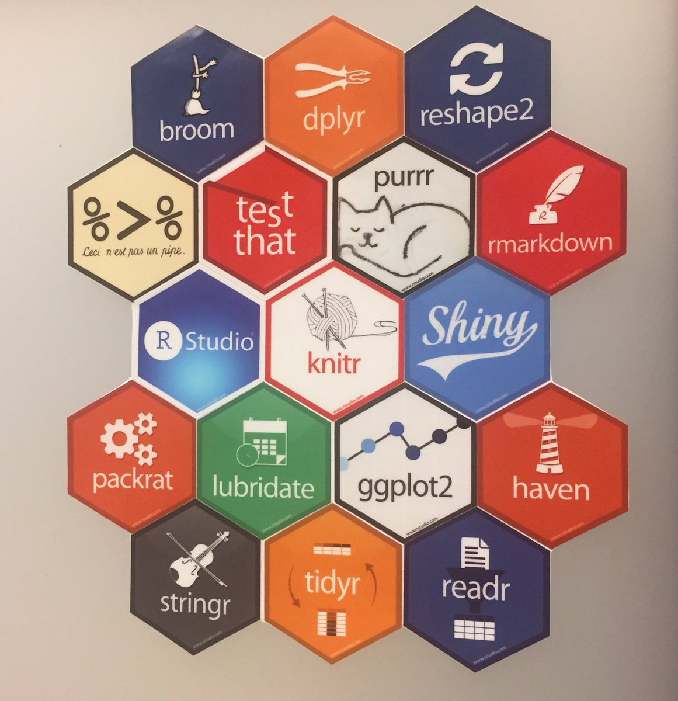
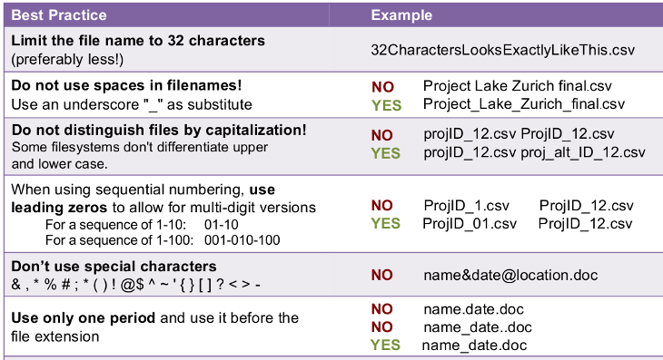
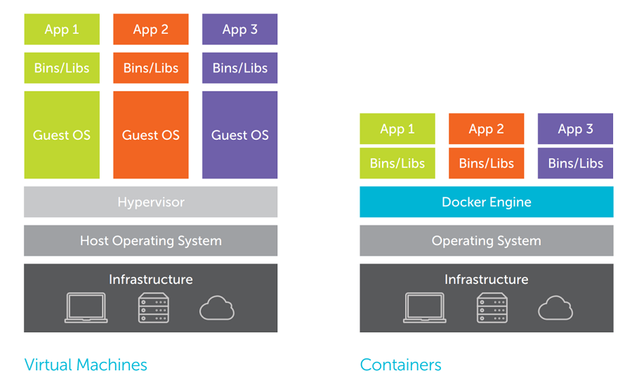

Tactical Tech Show
— tools, technologies, concepts —
Research Data
& Software Training Series — 2020-01-30


Feedback
Point your device to https://pollev.com/actionlake240
- Agree to cookies
- If asked for login: "skip"
- Answer first question:
Empa or Eawag?
Scripting & Programming
R, Python and Julia
Which one?
- R
- statistics, data wrangling, non-NN related ML, visualization, high quality packages, "friendly" ecosystem
- Python
- data wrangling, visualization, NN related ML, beginner-friendly, extremely versatile
- Julia
- very fast, own simulation codes, matrix algera, numerical solvers, differential equations (h/t Andreas)
What is everybody else in
your lab and in your field using?
Python
Python2 versus Python3
Python encapsulation
- Always work in virtual environments!
- Use virtualenv + pip, or
- conda
Python
Python packages you need to learn
- numpy
- Fundamental package for scientific computing: matrices (arrays), linear algebra
- pandas
- Fundametal package for data analysis: Data Frame (similar to R) and Time Series. Data sorting & preparing.
- plotnine
- Recommended for visualization. A clone of R's ggplot2. Traditional alternative: Matplotlib/Seaborn.
Python
Python packages for ML / AI
Python is "industry-standard" when it comes to ANN, CNN, RNN, GAN, ..., "deep-anything".
- scikit-learn
- Classical statistics & ML: regression, classification, clustering, decision-trees, validation, SVM, EOF, ...
- Caffe
- Fast CNN framework by Berkeley AI Research Lab.
- PyTorch
- Deep Learning Framework by Facebook
- Keras + TensorFlow
- Deep learning high-level interface by Google.
Python

R packages you need to learn
- dplyr,
- ridyr,
- tibble,
- ggplot2, ...
Modern packages for "Data Science" (Hadley Wickham). Check out the free book.
R goodies
- Find R packages
- CRAN Task Views : https://cran.r-project.org/web/views
- The R IDE
- RStudio Desktop
- Web-based interactive visualizations
- Shiny. Example: ExPanD. Also a cloud service.
- knitr
- Dynamic report generation, literate programming
- checkpoint
- A snapshot of all package versions (h/t Andreas)
library(checkpoint) checkpoint("2015-01-15")
Coding Tips
Steps towards better code
- A script without structure.
- Code is for humans: Comment and structure into sections!
- DRY, generalize: Write functions!
- Make code re-usable: Write a library!
- Get rid of hard-coded parameters: Make scripts take arguments -> docopt
- Read a book: The Pragmatic Programmer
{kind=link}
Version control
Learn Git!
- Looks intimidating at first.
- Once you know the important parts, it becomes easy.
- There will be courses.
- There are good online courses and tutorials & The Book
- Put your stuff on GitHub (gitlab.switch.ch, framagit.org, bitbucket.org, ...)
- No Shame! Nobody reads your code anyway.
- Everybody looks whether you have some.
Version control
Version control
Git, what for?
- Version control for software development, duh
- Convenient and efficient backup
- Organization of and collaboration on text-documents
- Trace the provenance of any data
Text & Presentations
Markdown
- Extremly simple markup-language
- Human readable (unlike html, xml)
- Can do everything you need in a scientific article
- Has become ubiquitous
(wikis, commenting systems, GitHub-README, webpage-generators, authorea.com... - Can be rendered to html, pdf, epub, LaTeX, even docx and odt, ....
- Can be mixed with plain LaTeX or html
Presentations
All tools for presentions are not fun.
- One alternative to PowerPoint are web-based presentations.
- Like this one
- One tool to make them: reveal.js
- For GUI oriented people: slides.com
- Triple-safety: On the web, on your laptop, on a stick, as PDF
- Also good for live-notetaking
Git and Writing
Collaborating on text-documents
using Markdown & Git
- Only likely in a few fields:
Co-authors must know Markdown & Git, a bit. - There are commercial cloud-based offers with a
GUI:
e.g. authorea.com - Good for coordinating the input of many contributors:
- See changes by everybody immediately
- Keep record of changes automatically
- Get help with merging multiple contributions
Data collection & cleaning
Data collection in the field
KoBoToolbox
- => Form design
- => Data entry
- Complex, e.g. conditional forms possible
- Completely Open Source & community run
- Self-hosting possible
- Works for desaster relief in the developing world
=> might even work in DE
Backup
- Always have at least
2 copies in existence - Rule of three:
- 3 copies
- 2 different storage media
- 1 off-site backup
Pay particular attention to transfer situations, e.g.
datalogger -> laptop -> field station
Backup
Automatize as much as possible
- Laptop: Use an automatically scheduled script
- -> Backup to external drive / memory-stick.
- -> Carry backup-medium separately during transport.
- ->
Use reverse differential backup if
possible,
e.g. rdiff-backup.
Data cleaning
Data organization & Databases
File system
File naming
- Have a clearly defined naming- and organization scheme!

Tabular data
Avoid Excel files (like the plague)
- Numerous bugs, bugs
& bugs in statistical functions
=> A no-go for analysis. - Mixing of data
storage, display
& programming
=> guarantees non-reproducibility. - Not a proper file-format standard
(rather three)
=> non-portability (even across MS-Office versions) - Bugs in the calendar. Never use "cell-format" = "Date"!
- Auto-correction accidents corrupted 20% of supplementary Excel gene lists.
- European Spreadsheet Risks Interest Group
Tabular data
Excel is good
- For typing data into a table
- For looking at a data table
- For disciplined usage
- If you
know
what you
are doing
If you use Excel,
read
Broman
& Woo (2018). Data Organization in Spreadsheets
Tabular data
- Use simple tab- or comma-separated files
- Make sure they are UTF-8 encoded, if they contain special characters
- To export a spreadsheet to csv, use LibreOffice (because Excel ... you know)
- Use open formats provided by your analysis language
( R: save(), Python: pickle.dump() )
Databases
When you spend a lot of time in your analysis code to
load the right files & extract the right datamaybe you need a database.
- MS-Access
- Good for one local user (with write permissions). Nice GUI for table-design & query-forms. Good for interactive use.
- SQLite
- Good for one local user (with write permissions). Integrated into RSQLite (R) and sqlite3 (Python). Good for programmatic use.
- RDBMS
- Multi-user, server-based. E.g. PostgreSQL, MariaDB, MS SQL Server
Virtualization
Virtual Machines
Run another operating system on your Desktop
- Main system: Windows, run Linux to for devlopment
- Main system: Linux, run Windows for Outlook, MS-Office, ...
- Share a whole development machine with complete setup
Software
- VirtualBox (Oracle, free)
- VMware Workstation Player/Pro
Drawbacks
- Needs ressources just like a separate Computer
- Need complete setup of an OS from scratch
Containers

Containers
Difference to VM
- Lots of containers on one machine possible
- Fast start and stop
Usage
- Try out complex software (e.g. Taiga)
- Develop software with "big" dependencies, e.g. databases
- Have the setup in code (as Dockerfile)
- Deploy exactly the same environment to any host
Questions?